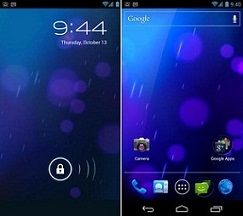
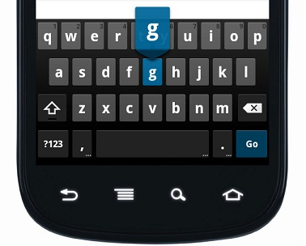
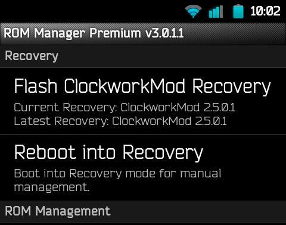
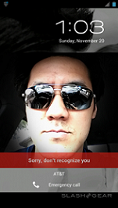
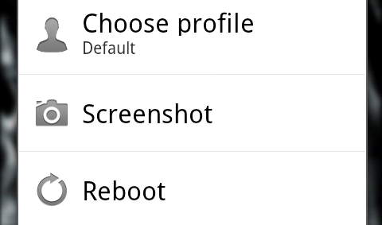
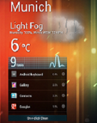
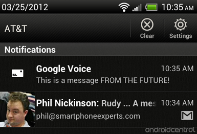
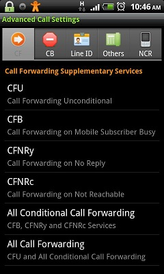
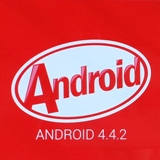

Android
Apa Itu Android???
- Android adalah sistem operasi berbasis Linux yang dirancang untuk perangkat seluler layar sentuh seperti smartphone dan tablet. Android didasarkan pada manipulasi langsung, menggunakan metode masukan sentuhan yang serupa dengan tindakan di dunia nyata, seperti menggesek, mengetuk, dan mencubit untuk memanipulasi obyek di layar.
Sejarah Android

- Andy Rubin
- Android, Inc. didirikan di Palo Alto, California, pada bulan Oktober 2003 oleh Andy Rubin, Rich Miner, Nick Sears, dan Chris White untuk mengembangkan "perangkat seluler pintar yang lebih sadar akan lokasi dan preferensi penggunanya"
Android 4.0 (Ice Cream Sandwich)

- Android versi ini (atau bisa disingkat ICS) memiliki beberapa kelebihan dibandingkan dengan android versi sebelumnya. Berikut beberapa kelebihan dari ICS :
1. Home Screen
- 
- Kita dapat merubah ukuran widget sesuka kita, sehingga tampilannya akan terlihat lebih nyaman. Ikon aplikasi dapat diseret ke dalam folder. Tapi pada Ice Cream Sandwich lebih unggul dari iPhone karena kita bisa menempatkan kontak seseorang atau semacam jalan pintas panggilan cepat ke dalam folder juga, dan bahkan menempatkan orang dalam favorit.
2. Keyboard
- 
- Sedikit update pada bagian keyboard yaitu kemampuan inline pemeriksaan ejaan. Sayangnya masih belum support bahasa Indonesia.
3. Roboto
- 
- Droid Sans yang telah menjadi font di Android telah diganti dengan typeface baru bernama Roboto.
4. Face Unlock
- 
- Untuk membuka layar (lockscreen) tersedia opsi selain menggeser (slide), PIN & Password. Sekarang tersedia pendeteksi wajah yang cukup keren dan canggih. Hanya dengan mendekatkan wajah ke gadget, maka Android akan mengenalinya lalu membuka layar buat pengguna.
5. Taking Screenshots
- 
- Kita bisa dengan mudah mengambil screenshot (tampilan layar yg sedang aktif) tanpa harus menginstal aplikasi tambahan. Caranya mudah, hanya dengan menekan tombol power + volume down secara bersamaan, atau tombol power + home sekaligus. Tidak lebih dari satu detik, secara otomatis akan keluar bingkai (frame) warna putih, yang menandakan proses screenshoot berhasil. Gambarnya bisa dilihat pada gallery.
6. Flexible Widgets
- 
- Widget merupakan icon aktif yang mirip fungsi shortcut pada Windows. Widget akan mempersingkat waktu untuk membuka aplikasi yang sering digunakan atau dilihat, misalnya news, cuaca atau musik. Kita bisa menemukan dan mengatur widget dalam menu aplikasi melalui tab "widget". Atau dengan menekan icon aplikasi beberapa detik untuk menampilkan widget tsb di homescreen (layar depan).
7. Notifications
- 
- Google melakukan perombakan besar di area ini. Kini music control telah terintegrasi dan notifikasi juga mudah dihilangkan dengan cara swipe ke kiri atau kanan. Pengguna juga bisa mengintip notifikasi kendati layar ponsel dalam keadaan terkunci.
8. Advanced Call Options

- Kita bisa menolak atau mengakhiri panggilan hanya dengan menggunakan tombol power saja, jadi tidak perlu lagi mencari tombol merah "End Call". Kita juga bisa menolak panggilan atau menolak dengan SMS. Untuk melakukan hal ini cukup pilih pengaturan pada "Call".
9. Transfer Data Dengan Android Beam
- Melalui Android Beam ini kita bisa mentransfer data antara dua perangkat dengan cara yang mudah. Teknologi ini menggunakan fitur NFC (Near Field Communication), tetapi kedua ponsel harus menjalankan Android Beam terlebih dahulu. Dengan begitu kita bisa dengan mudah mentransfer foto, contact atau file multimedia hanya dengan mendekatkan dua gadget (tanpa perlu menyentuhnya). (Android Beam tidak tersedia pada semua gadget, hanya perangkat tertentu saja.)

Android Kitkat
- 
merupakan versi Android terbaru 4.4, yang dapat digunakan untuk perangkat yang menggunakan RAM minimal 512 MB. Sehingga perangkat Android kelas Entry level pun akan dapat merasakan update terbaru dari OS Android terbaru dari Google ini.
10 Fitur Baru di Android Kitkat
1. Enhanced Caller ID
- Orang-orang memiliki kecenderungan untuk mengabaikan panggilan dari nomor telepon yang tidak dikenali. Nah, kalau kamu menerima panggilan yang nomornya tidak ada di dalam Kontak kamu, maka Android KitKat akan mencoba untuk mengambil informasi Caller ID dari daftar lokal dalam Google Maps. Fitur ini bisa sangat berguna bagi orang-orang yang memiliki keluarga dan teman-teman yang menelepon dari nomor tempat mereka bekerja. Misalnya gini, kamu dapat nomor dari 0274-6678xxx, nah Google bakal ngasih tau dimana lokasi dan tempat perusahaan si penelpon.
2. Ok Google
- Kamu tidak perlu lagi menyentuh layar untuk melakukan pencarian, mengirim teks, mencari arah atau memutar musik. Bila kamu berada di layar awal (home screen) atau memiliki aplikasi Google Now, kamu cukup mengatakan “Ok Google” diikuti dengan perintah untuk melakukan salah satu dari tugas-tugas yang kamu inginkan. Misal nih, kamu dapat mengatakan perintah seperti “Ok Google, where is the closest McDonalds.” atau “Ok Google, play Rihanna.” Sungguh asyik bukan?
3. Immersive Display
- Dalam versi Android sebelumnya, status bar dan tombol navigasi tetap muncul di layar saat kamu sedang bermain game atau menonton film. Saya kira hal itu sangat mengganggu, nah di Android KitKat ini telah ditambahkan sebuah fitur untuk menyembunyikan status bar dan tombol navigasi agar tampilan Android kamu bisa benar-benar full screen.
4. Contact Prioritization
- Android KitKat mem-prioritaskan kontak berdasar pada orang-orang yang lebih sering kamu ajak SMS-an atau lebih sering kamu telepon. Dari aplikasi Contacts, kamu juga dapat mencari tempat nongkrong atau restaurant yang paling dekat di daerah kamu melalui search box yang berada pada bagian atas. Aplikasi Kontak Android KitKat ini juga ter-integrsi dengan aplikasi kontak Google kamu.
5. Message Consolidation
- Android KitKat telah menggabungkan SMS, MMS, Panggilan video dan Google Hangouts chat dalam satu aplikasi. Aplikasi Android KitKat Messagess juga mendukung share-location dan mengirimkan animasi GIF ke teman kamu. Hampir mirip pada aplikasi iMessage pada iOS, bedanya pada iMessage kita tidak bisa mengirim gambar gambar format GIF.
6. Emojis
- Google telah menambahkan Emojis ke Keyboard Android KitKat. Emoji adalah istilah Jepang untuk ideogram dan smiley yang digunakan dalam pesan teks dan website. Kamu dapat menambah isi pesan kamu dengan menempatkan smiley, mobil, hewan, dan ikon menarik lainnya dengan fitur ini. Fitur ini meniru pada iOS keyboard, tapi ndak apa-apa, yang bagus-bagus memang harus ditiru, selama itu tidak melanggar hak cipta.
7. Cloud Printing Support
- Android KitKat memiliki dukungan untuk Cloud Printing (pencetakan di awan). Jadi, kamu bisa mencetak dokumen, presentasi, website dan foto dari ponsel KitKat atau tablet. Agar fitur ini bisa bekerja, printer kamu harus terhubung ke Google Cloud Print atau HP ePrint.
8. Quickoffice
- Google Quickoffice akan terinstal dengan Android KitKat. Quickoffice mendukung pengeditan dokumen, spreadsheet, dan presentasi yang dibuat dengan Microsoft Office atau Google Docs. Ketika Anda login ke Quickoffice menggunakan akun Google kamu, aplikasi akan menampilkan dokumen yang telah tersimpan dalam Google Docs dan akun Google Drive. Juara. Tidak rugi Google mengakuisisi QuickOffice tahun lalu.
9. Step Detector And Step Counter
- Android KitKat memiliki detektor langkah dan penghitung langkah, sehingga aplikasi yang berhubungan dengan kebugaran/fitness dapat melacak ketika pengguna sedang berjalan, berlari, dan memanjat tangga. Langkah detektor ini menggunakan input accelerometer untuk mengenali ketika pengguna telah mengambil langkah. Penghitung Langkah ini akan melacak jumlah langkah sejak terakhir kamu me-restart perangkat kamu. Aplikasi Runtastic Pedometer menggunakan Step Detektor dan Step Counter ini untuk melacak apakah kamu sudah melakukan 10.000 langkah per hari yang direkomendasikan untuk mempertahankan gaya hidup sehat.
10. Full-Screen Album And Movie Art Combined With Controls
- Ketika kamu sedang memainkan streaming musik atau memproyeksikan film ke Google Chromecast dari perangkat KitKat kamu, kamu bisa melihat full-screen album dan Movie art di tampilan gadget Android kamu. Pada layar terkunci (lock screen) di situ bakal ada kontrol yang memungkinkan kamu untuk memutar (Play), Pause, atau melompat ke lagu selanjutnya atau bab film selanjutnya.
Syntax Highlighting
Powered by Lea Verou's Prism
bespoke.from('article', {
keys: true,
touch: true,
hash: true,
state: true,
bullets: 'li, .bullet'
});
Named Route
Powered by bespoke-hash
Look up! This route has been named with a 'data-bespoke-hash' attribute.
Emphatic Slide!
Powered by bespoke-state
Just the beginning...
- Edit Jade markup in 'src/index.jade'
- Edit Stylus styles in 'src/styles/main.styl'
- Edit JavaScript in 'src/scripts/main.js'
- Enjoy! :) -@markdalgleish